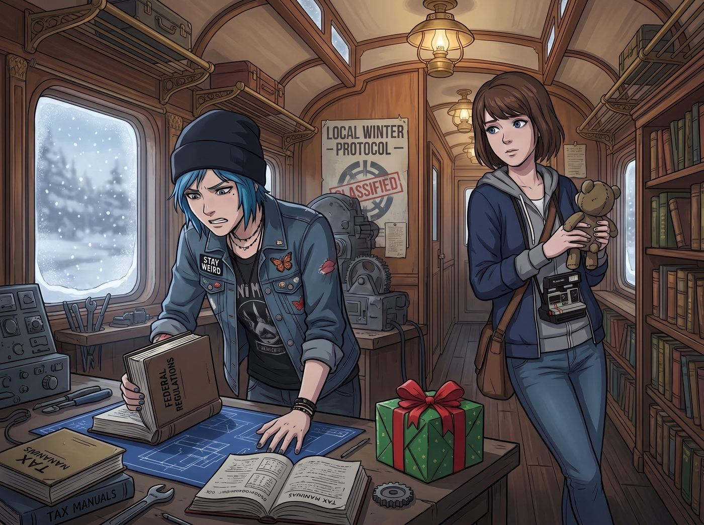

血汗小熊事件

自從那場「在地過冬協議」通過後，Chloe 和 Max 就開始秘密籌劃一個危險的任務——瞞著全車廂最強大的情報系統，替 Lily 準備一份聖誕禮物。
「送什麼給一個興趣是背誦聯邦法規的人啊？」Chloe 翻遍了 Lily 的工作台抽屜，除了一疊疊稅務手冊和判例彙編，找不到任何一絲屬於普通十九歲女孩的痕跡，「她連生日願望都是『希望州議會早日通過第 402 號修正案』，這種人要怎麼哄？」
Max 靠在門框上，若有所思地摸著下巴：「她每次崩潰的時候，都是抱著那件小熊睡衣。這大概是她唯一沒有被合規邏輯污染的軟肋。」
一、危險的地下網購行動
兩人一拍即合，開始在網路上搜尋高品質的手工小熊玩偶，最終鎖定了一款出自某家小型精品工作室、做工精緻、限量發售的絨毛熊。
但第一個難關，是怎麼避開 Lily 那套無孔不入的消費監控系統。
「不能用車廂的公用網路。」Chloe 壓低聲音，戴上一頂毫無必要的毛線帽，彷彿自己正在執行諜報任務，「上次我半夜偷偷買披薩，五分鐘內就收到她發來的『異常消費行為偵測通知』，附帶一份要求我解釋動機的問卷。」
Max 打電話請 Warren 幫忙，讓她透過 VPN 跳板遠端連上他家在西雅圖的網路完成了下單，這樣即使 Lily 的系統想追蹤來源IP，也只會查到一個八竿子打不著的宅男住址。兩人躲在暗房裡，像做了什麼驚天動地的大事一樣互相擊掌慶祝。
二、結帳頁面的驚魂
慶祝的喜悅只維持了不到十分鐘。
Max 的手機震動了一下，跳出一封標題冰冷得讓人頭皮發麻的郵件：「供應鏈盡職調查警示：您瀏覽的商品所屬製造批次，於歐盟強迫勞動風險資料庫中被標記為高風險。」
「這什麼玩意兒？」Chloe 湊過去看，臉色瞬間變得慘白，「等等，這不是我們剛才買的那隻熊嗎？！」
郵件裡附上了一份簡短但觸目驚心的說明：該款絨毛熊的部分填充棉料，其源頭工廠被歐盟近期剛上線試營運的強迫勞動風險資料庫標記，涉嫌在生產環節使用未成年勞工，且工時記錄存在系統性造假的嫌疑。雖然這套機制目前還處於資料庫先行公開、正式市售禁令尚未全面落地的過渡階段，但資料庫本身已經公開可查。
Max 的臉色也白了：「我們差點……差點把一隻用童工做出來的熊，當作聖誕禮物送給一個以打擊這種剝削為職業的人？」
「這比忘記買禮物還丟臉一萬倍！」Chloe 抓著頭髮，痛苦地在暗房裡打轉，「如果被她發現，她大概會直接把這隻熊列為呈堂證供，然後轉頭問我們是不是想暗殺她的職業道德！」
三、緊急換貨的良心工程
兩人連夜取消訂單，開始了一場比之前更謹慎百倍的「良心採購行動」。
「這次我們得找一個真正乾淨的供應鏈。」Max 認真地說，「不能再賭運氣了。」
Chloe 突然靈光一閃：「等等……妳說 Lily 那套系統會自動比對供應鏈資料庫，對吧？如果我用一個假帳號，去問她的自動化客服系統『哪些玩偶品牌完全符合勞動合規標準』，她會不會就這樣，親手幫我們篩選出送給她自己的禮物？」
Max 愣了一下，隨即笑出聲：「這主意瘋狂到有點可愛。」
於是，兩人用一個偽裝成「車廂消費者權益研究專案」的匿名帳號，向 Lily 平時用來嚇唬供應商的那套自動比對系統提交了查詢請求。半小時後，系統回傳了一份長達三頁、附帶完整第三方稽核證書與工廠實地訪查紀錄的「零風險絨毛玩具品牌白名單」。
她們按圖索驥，最終找到了一家總部位於奧勒岡州、堅持在地手工製作、甚至主動公開每一位縫紉師傅薪資單的小型工作室，訂了一隻做工同樣精緻、甚至更加溫暖可愛的小熊。
四、附贈認證文件的驚喜
聖誕節當天，當 Lily 拆開那個包裝樸素卻用心的禮物盒，看到裡面那隻milk色絨毛小熊時，她那張總是掛著精密微笑的臉，難得地出現了一絲真實的、措手不及的動容。
「這是……」
「聖誕快樂，實習生。」Chloe 別過臉，語氣裡帶著一絲不自在的彆扭，「不用謝，就是隨便買的。」
Lily 小心翼翼地把熊抱在懷裡，正準備露出感動的表情時，她的視線瞥見了盒子底部一張被 Max 特意留下的小卡片——那是工作室主動提供的供應鏈透明化證書影本，詳細列出了每一道工序的產地、工時記錄與薪資明細。
Lily 瞬間瞪大了眼睛，聲音都在發顫：「你們……你們特地確認過它的供應鏈合規性？」
「別誤會，我們不是故意要送妳一份『行政報告』當禮物。」Max 尷尬地解釋，把整個烏龍事件、差點誤買童工製品、緊急換貨的全過程一五一十地說了出來。
車廂裡安靜了幾秒。
Lily 低頭看著懷裡的小熊，又看了看那張證書，眼眶忽然有些發紅。她從沒收過一份禮物，附帶著別人為了她的價值觀，而額外做了這麼多功課。
「謝謝你們。」Lily 輕聲說道，聲音裡少見地沒有摻雜任何合規術語，「這是我收過最好的禮物。」
停頓了兩秒，她忽然像是想起了什麼，迅速抹了一下眼角，重新推起了圓框眼鏡，職業病瞬間發作：「不過，我還是要提醒你們，這份第三方稽核證書的簽發機構，並不在歐盟認可的十七家權威機構名單之內，嚴格來說證據效力略顯不足。等一下我幫你們寫封信去問問看，能不能補發一份更正式的認證。」
「……」
Chloe 和 Max 對視一眼，無奈地笑了。
在這個由核反應爐和合規法條構築的堡壘裡，就連一份充滿心意的聖誕禮物，最終也逃不過被重新審查一遍的命運。但這一次，沒有人感到不耐煩——因為她們都知道，這正是 Lily 表達感動的方式。